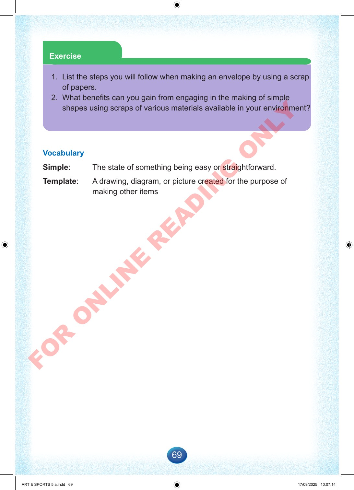

69
Exercise
1.
List
the
steps
you
will
follow
when
making
an
envelope
by
using
a
scrap
of
papers.
2.
What
benefits
can
you
gain
from
engaging
in
the
making
of
simple
shapes
using
scraps
of
various
materials
available
in
your
environment?
Vocabulary
Simple:
The
state
of
something
being
easy
or
straightforward.
Template:
A
drawing,
diagram,
or
picture
created
for
the
purpose
of
making
other
items
ART
&
SPORTS
5
a.indd
69
ART
&
SPORTS
5
a.indd
69
17/09/2025
10:07:14
17/09/2025
10:07:14
F
O
R
O
N
L
I
N
E
R
E
A
D
I
N
G
O
N
L
Y